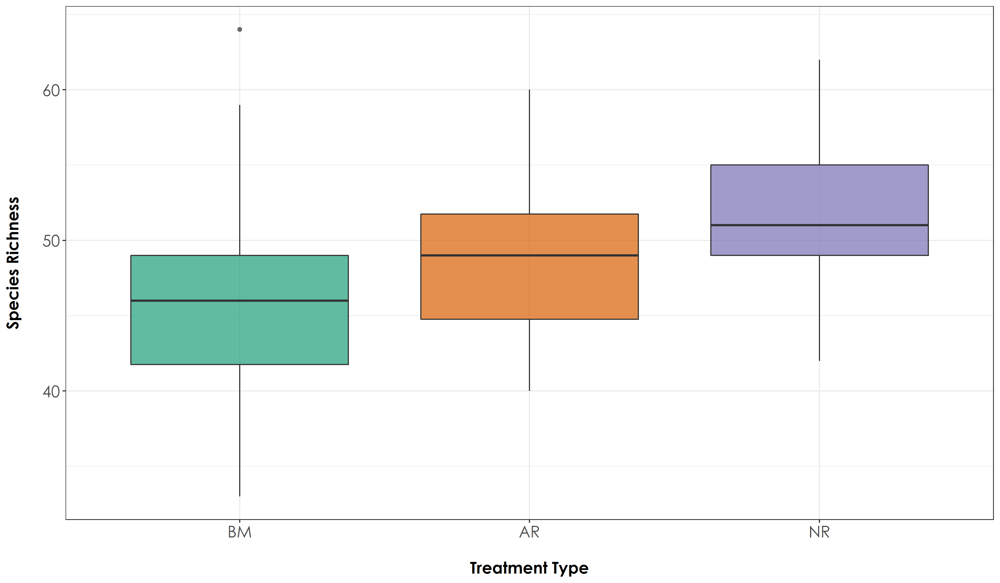

Section 8 Bird Species Richness
In this script, we will calculate:
- Site-wise species richness to understand if species composition across treatment types are distinctly different.
- Repeat the above calculations, but using species traits - If a species is a rainforest specialist or an open-country generalist.
8.1 Install required libraries
library(tidyverse)
library(dplyr)
library(stringr)
library(vegan)
library(ggplot2)
library(scico)
library(data.table)
library(extrafont)
# Source any custom/other internal functions necessary for analysis
source("code/01_internal-functions.R")8.2 Load manual annotations data
To start with, we will compute species richness from 3 non-consecutive visits for each site for each season. Across two seasons, a total of 6 non-consecutive visits are chosen for each site.
We will use an excel sheet of manual annotations, which contains 10s-clips from each site (A random 16-min was chosen between 6am and 10am and divided into 10s chunks for the ease of annotations).
# Attach the annotation data for summer and winter
summer_data <- read.csv("data/2020-summer-annotation-working-document.csv")
winter_data <- read.csv("data/2020-winter-annotation-working-document.csv")
## Please write to the lead author if you would like to access this data (Vijay Ramesh; vr2352@columbia.edu)
# combine the datasets for a single dataframe for the present analysis
data <- bind_rows(summer_data,winter_data)
names(data)
# reorder columns
data <- data %>%
relocate(c("BFO","SBEO", "JN", "AK", "HSWP"), .after = "CR") # certain species codes are mentioned here and these can be found in the supplementary data.
# Site-wise sorting of the 16-min of data
# Split the file names into 4 columns : Site, Date, Time and Splits
data <- separate(data, col = Filename, into = c("Site", "Date", "Time", "Splits"), sep = "_")
data
# Load the species-trait-data
trait_dat <- read.csv("data/species-trait-dat.csv")8.3 Subset data
How many visits (counted as number of unique days) to a site has been annotated? Please note that some sites have more than 6 visits to a site, and hence we ensure that we choose only 6 non-consecutive visits to a given site.
NOTE: You need to run this only once and if you have already run it, move to the next chunk of code and load datSubset.
# First we remove OLCAP5B - a site for which only 3 visits were made in summer and not sampled as a result of logistic reasons in winter
data <- data %>%
filter(!str_detect(Site, 'OLCAP5B'))
# Number of visits to a particular site
# Only INBS04U has 5 visits because another visit was not possible due to rain
nSites_Days <- data %>%
dplyr::select(Site, Date)%>%
distinct() %>% arrange(Site) %>% count(Site)
# Unique date site combination to give you a sense of sampling
uniqueSiteDate <- data %>%
group_by(Site) %>%
distinct(Date)
# Convert date column to YMD format using lubridate::ymd()
uniqueSiteDate$Date <- lubridate::ymd(uniqueSiteDate$Date)
# The below lines of code were written following a query on stackOverflow to select six non-consecutive visits to any site
# Link: https://stackoverflow.com/questions/67212152/select-non-consecutive-dates-for-every-grouped-element-in-r
nonConVisits <- uniqueSiteDate%>%
ungroup() %>%
group_split(Site) %>%
map_df(., ~ .x %>% ungroup() %>%
arrange(Date) %>%
mutate(n = 1) %>%
complete(Date = seq.Date(first(Date), last(Date), by = 'days'))%>%
group_by(n = cumsum(is.na(n))) %>%
filter(!is.na(Site)) %>%
filter(row_number() %% 2 == 1) %>%
ungroup() %>%
sample_n(min(n(), 6))
) %>%
dplyr::select(-n)
# Change the structure of the date column back to character for using one of the join functions
nonConVisits$Date <- str_remove_all(as.character(nonConVisits$Date),"-")
# Left-join with the original dataframe to subset the data for analysis
datSubset <- left_join(nonConVisits,data)
names(datSubset)
# renaming columns
datSubset <- rename(datSubset, Restoration.type = Restoration.Type..Benchmark.Active.Passive.)
# Save this data as a .csv for future analysis (later scripts)
write.csv(datSubset,"results/datSubset.csv", row.names = F)8.4 Total number of detections
Now group the data by site and restoration type and sum the number of detections across sites. We will calculate the overall number of detections for each 10s clip, which will be used to estimate species richness below.
# If you have already processed subsetting of data, read it in directly
datSubset <- read.csv("results/datSubset.csv")
# Calculate the overall number of detections for each site across 6 days of data (translates to ~ 96 min of data per site)
nDetections_Site <- datSubset %>%
group_by(Site, Restoration.type) %>%
transform() %>% replace(is.na(.), 0) %>%
summarise_at(.vars = vars(c("IP":"HSWP")),.funs = sum) 8.5 Calculate species richness
Convert the detections to 1, since we are interested in calculating richness per site by converting values >1 to 1 for multiple visits to a site. In other words, we want to establish overall species richness for a 16-min to 48-min window.
richness <- nDetections_Site %>%
mutate_at(vars(c("IP":"HSWP")),~ replace(., . > 0, 1)) %>%
rowwise() %>%
mutate(richness = sum(c_across(IP:HSWP))) %>%
dplyr::select(Site, Restoration.type, richness)
# Test if there are significant differences in richness across treatment types
anovaAll <- aov(richness~Restoration.type, data = richness)
# Tukey test to study each pair of treatment - reveals no signficant difference across treatment types
tukeyAll <- TukeyHSD(anovaAll)
# The above result suggests that there are no differences in overall species richness across treatment types
# Create a boxplot of species richness by Restoration Type
# reordering factors for plotting
richness$Restoration.type <- factor(richness$Restoration.type, levels = c("Benchmark", "Active", "Passive"))
# Add a custom set of colors
mycolors <- c(brewer.pal(name="Dark2", n = 3), brewer.pal(name="Paired", n = 3))
fig_richness <- ggplot(richness, aes(x=Restoration.type, y=richness, fill=Restoration.type)) + geom_boxplot(alpha=0.7) +
scale_fill_manual("Treatment type",values=mycolors, labels=c("BM","AR","NR")) +
theme_bw() +
labs(x="\nTreatment Type",
y="Species Richness\n") +
scale_x_discrete(labels = c('BM','AR','NR')) +
theme(axis.title = element_text(family = "Century Gothic",
size = 14, face = "bold"),
axis.text = element_text(family="Century Gothic",size = 14),
legend.position = "none")
ggsave(fig_richness, filename = "figs/fig_richness.png", width=12, height=7,
device = png(), units="in", dpi = 300);dev.off()
# We observe that the overall species richness is relatively higher in passively restored forest patches, followed by benchmark (protected area) forest patches and actively restored forest patches (But these differences are not significant) ## Species richness by trait
Using species trait data to check if species richness varies by treatment type as a function of whether a species is a rainforest specialist vs. open-country specialist. To do so: Add an additional column of species-trait data and group data based on the same.
# First, we pivot the species-codes and then match the codes with trait_data and reformat the data to keep all detections>0 as 1 else they are 0
richness_trait <- nDetections_Site %>%
pivot_longer(cols=IP:HSWP, names_to="Species_Code", values_to="count") %>%
left_join(.,trait_dat, by=c("Species_Code"="species_annotation_codes")) %>%
mutate(forRichness = case_when(count>0 ~ 1,
count==0 ~ 0))
# Calculate overall richness for each site as a function of rainforest species and open-country species
richness_trait <- richness_trait %>%
dplyr::select(Site, Restoration.type, Species_Code, habitat, forRichness)%>%
group_by(Site, Restoration.type, habitat) %>%
summarise(richness = sum(forRichness)) %>%
drop_na()
# Let's subset data for richness as a function of rainforest specialists and open-country generalists and test for significant differences (if any)
richness_rainforest <- richness_trait %>%
filter(habitat=="RF")
richness_opencountry <- richness_trait %>%
filter(habitat=="OC")
# Test if there are significant differences in richness across treatment types as a function of species trait
anova_rainforest <- aov(richness~Restoration.type, data = richness_rainforest)
anova_opencountry <- aov(richness~Restoration.type, data = richness_opencountry)
# Tukey test to study each pair of treatment - reveals no signficant difference across treatment types for rainforest birds, but a significant difference between benchmark-active and benchmark-passive sites for open country birds
tukey_rainforest <- TukeyHSD(anova_rainforest)
tukey_opencountry <- TukeyHSD(anova_opencountry)
# reordering factors for plotting
richness_trait$Restoration.type <- factor(richness_trait$Restoration.type, levels = c("Benchmark", "Active", "Passive"))
# Plot the above result
fig_richness_trait <- ggplot(richness_trait, aes(x=Restoration.type, y=richness, fill=habitat)) +
geom_boxplot(alpha=0.7) +
scale_fill_scico_d(palette = "roma",
labels=c("Open country","Rainforest")) +
theme_bw() +
labs(x="\nTreatment Type",
y="Species Richness\n") +
scale_x_discrete(labels = c('BM','AR','NR')) +
theme(axis.title = element_text(family="Century Gothic",
size = 14, face = "bold"),
axis.text = element_text(family="Century Gothic",size = 14),
legend.title = element_text(family="Century Gothic",
size = 14, face = "bold"),
legend.key.size = unit(1,"cm"),
legend.text = element_text(family="Century Gothic",size = 14))
ggsave(fig_richness_trait, filename = "figs/fig_richness_trait.png", width=12, height=7, device =png(), units="in", dpi = 300); dev.off()No significant differences were observed for rainforest species across treatment types, but we noticed a significant difference between BM-NR and BM-AR for open-country birds.